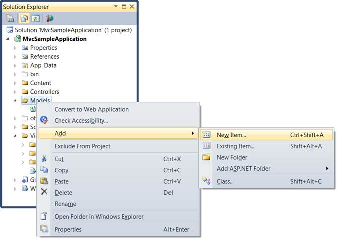
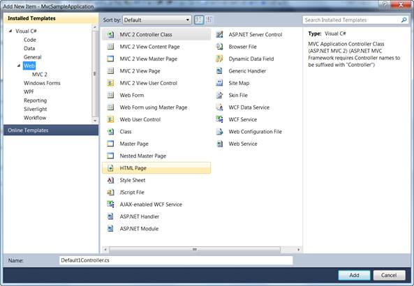
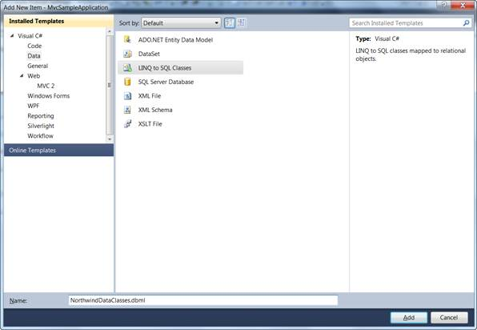
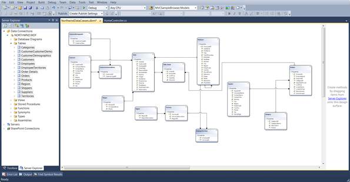

After an MVC application is created, a model has to be added. A model is a place from where the data can be fetched by the controller (Refer to Understanding ASP.NET MVC). This section guides you with the step-by-step procedure on adding a model.
The steps to add a Model are as follows:
1. On the Solution Explorer, right-click the Models folder. A ContextMenu is displayed.

Figure 35: Context Menu displayed on clicking the Models folder
2. On the context menu, point to Add, and click New Item. The Add New Item (Application Name) dialog box is displayed. The Categories pane displays the components available under the Visual C# program. The Templates pane displays the templates under the selected elements.

Figure 36: Add New Item dialog box
3. Under Visual C#, click Data. The Visual Studio installed templates are displayed in the Templates pane.

Figure 37: Connecting a database to the application
 Note: This step is optional and should be
performed only when you want to attach a database with the model. For details,
see: http://weblogs.asp.net/scottgu/archive/2007/05/29/linq-to-sql-part-2-defining-our-data-model-classes.aspx.
Note: This step is optional and should be
performed only when you want to attach a database with the model. For details,
see: http://weblogs.asp.net/scottgu/archive/2007/05/29/linq-to-sql-part-2-defining-our-data-model-classes.aspx.
4. In the Name box, enter NorthwindDataClasses.
5. In the Templates pane, select Linq to SQL Classes.
6. Click Add.
The data classes are added under the Model folder.
7. In the Name box, enter NorthwindDataClasses.dbml, and click the Add button. Now northwind linq to sql classes are created in your application and the Object Relational Designer appears.
8. Drag and drop the Tables from the Server Explorer window onto the Object Relational Designer, to create LINQ to SQL classes that represent particular database tables. You need to add all the northwind database tables onto the Object Relational Designer.
The output is shown in the screenshot displayed below:

Figure 38: NorthwindDataContext.dbml